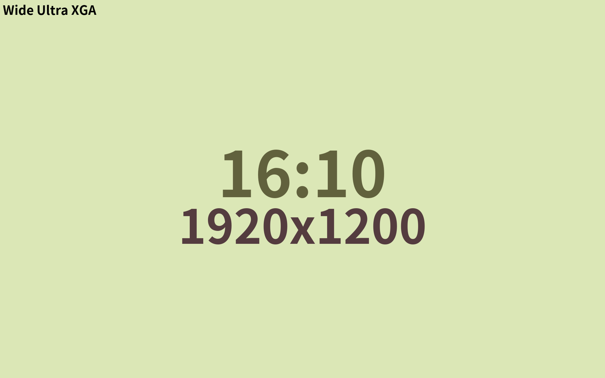

설명닫기
기획시 주의사항
주로 쓰이지 않는 형태입니다. 모바일에서 자주 쓰는 기능을 배치하기도 합니다. 기존 컨텐츠들을 가리 됩니다.
해소방안
1. 숨기거나 펼칠수 있는 기능이 추가로 필요합니다.
구현
버튼 콘텐츠(활성화)
버튼 콘텐츠 01(비활성화)
1번 콘텐츠로 가기
2번 콘텐츠로 가기
3번 콘텐츠로 가기
4번 콘텐츠로 가기
5번 콘텐츠로 가기

설명닫기
응용편